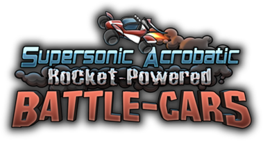
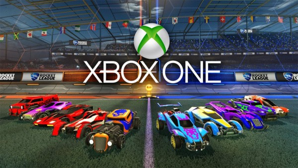

Before Rocket League, Psyonix had developed a game titled “Supersonic Acrobatic Rocket-Powered Battle-Cars”, in which players use cars to shoot a ball into the opponent's net. SARPBC was officially released for the Playstation 3 on February 12, 2009.
Although the game sold over 2 million copies, it was not a successful project. However, SARPBC had a small yet dedicated fan base that offered ideas for a sequel to the game. These contributions sparked the idea of Rocket League.
The development of the sequel for SARPBC, Rocket League, started in 2013. The entire project costed under $2 million to develop. Pysonix used critical feedback from SARPBC to fine-tune the sequel, for example increasing the maximum frame-rate, making the game more appealing to new players, and adding customizable toppers, boosts, and antennas. Psyonix had also replaced SARPBC's hosted web servers with Rocket League's own game servers, allowing cross-platform gameplay and reducing ping. The name “Rocket League” was selected with a vision of reducing the title length from its predecessor, making it more marketable.
Rocket League was officially announced as the sequel of SARPBC in 2014. Pysonix partnered up with Youtube and Twitch.tv video game streamers to help spread the word about their upcoming game. Rocket League released for Windows and PS4 on July 7, 2015, and on Xbox One on February 17, 2016.

Psyonix plans to keep all gameplay updates free, and only charge for cosmetic Downloadable Content (DLC). Psyonix continues to regularly improve and add new features Rocket League, with some major updates being:
| Release Date | Content |
|---|---|
| November 9, 2015 | Mutators were added, which allows players to customize match options, including match length, ball size, and custom gravity. |
| February 3, 2016 | A game-mode named “Rocket Labs” was added, in which players compete in experimental maps. This feature was added as a new way to collect user feedback before adding maps into the standard game-mode. |
| September 8, 2016 | A game-mode named “Rumble” was added, in which players recieve power-ups every 10 seconds to help them score on the opponent's net. |
| March 22, 2017 | A new game-mode named “Dropshot” was added, in which players compete to smash their opponent's floor as fast as possible. |
Soon after Rocket League was released, it became an officially sponsored eSport, with support from the Electronic Sports league (ESL) and Major League Gaming (MLG). After Rocket League became popular on Twitch.tv, a video game live-streaming service, Psyonix created their own Rocket League Championship Series (RLCS).
In March 2016, Pyonix announced the first Rocket League Championship Series; the finals of the first series took place in August 2016 with a prize pool of $55,000. The second season of RCLS took place in December 2016 with a prize pool of $125,000. In April 2017, the third season of RLCS will commence, with a $300,000 prize pool.